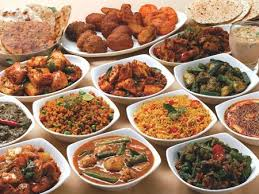
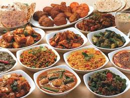

Sindh
Land of Rivers and Rich Culture
About Sindh
Sindh, one of Pakistan's four provinces, is known for its beautiful landscapes, warm people, and rich history. It's like a colorful painting with green fields, sparkling rivers, and a touch of desert. The Indus River, one of the world's longest rivers, flows through Sindh, making it a fertile land. People grow lots of yummy things here, like rice, cotton, and sugarcane. You can even see big, green rice fields! Sindh has a very old history. There are amazing ancient ruins to explore, like the ones at Mohenjo-daro. People have lived here for thousands of years! The people of Sindh are known for their friendly smiles and warm hearts. They love music, dance, and festivals. You might see colorful kites flying high in the sky during kite festivals! Sindh is a place where you can relax on the beach, explore historical sites, or just enjoy the simple life. It's a perfect place to learn about Pakistan's amazing culture and heritage!

Sindh Culture
Sindh is known for its vibrant and friendly people! They love to celebrate life with music, dance, and delicious food. One of their most famous festivals is the Chehlum, a time for remembering and honoring loved ones. Sindhi people wear beautiful clothes with lots of colors and embroidery. Women often wear colorful Riris, which are long, flowing dresses. Men wear turbans and shalwar kameez. Family is very important in Sindhi culture. They love to spend time together, sharing stories and laughing. They also have a strong tradition of hospitality, always welcoming guests with open arms. Sindhi music is full of energy and joy. It's like a party in your ears! People love to dance to the beat and clap their hands.
Sindhi Topi
A Sindhi Topi is a cool hat worn by Sindhi men. It's usually made of cloth and helps keep the sun off their faces. It's like a superhero cape, but for your head!
Ghagra Choli
A Ghagra Choli is a beautiful dress worn by many Indian and Pakistani women. It has a long, flowing skirt called a ghagra and a fitted top called a choli. It's often decorated with sparkly beads and colorful patterns.
Sindhi Shalwar Qameez
A Sindhi shalwar kameez is a comfy outfit worn by both men and women. It's like your favorite pajamas, but cooler!
Sindhi Dance
Sindhi dance is full of energy and joy! It's like a colorful party with lots of clapping, spinning, and smiling. People wear beautiful clothes and move to the rhythm of the music. It's a fun way to celebrate!
Sindhi Pots
Sindhi pots are special pots made from clay! They're like magic containers that keep food and water cool and fresh. People have been using them for a long time, and they're still popular today!
Charkha
A charkha is a spinning wheel. It's an old tool used to make thread from cotton. People turned the wheel to spin the cotton into a long, thin thread. It was very important for making clothes!
Aekta Day
Aekta means unity or togetherness. It's like when you and your friends play together and have fun! It's about being kind and helping each other.
Sindhi Crafts
Sindhi crafts are super cool! They make beautiful things like colorful pottery, amazing embroidery on clothes, and pretty jewelry. It's like magic, turning simple things into works of art!
Sindhi Foods
Sindhi food is as colorful as the province itself! It's full of yummy flavors and spices that will make your taste buds happy. One of the most famous dishes is Biryani, a flavorful rice dish cooked with meat or vegetables. It's like a party in your mouth! If you love sweets, you'll love Sindhi desserts! Gulab Jamun is a soft, sweet ball soaked in sugar syrup. It's like a cloud of deliciousness! And don't forget about Ras Malai, a creamy, sweet treat made with cheese. For a quick snack, try Samosas. These crispy treats are filled with spicy potatoes and peas. You can find them on almost every street corner! Sindhi food is all about sharing and enjoying good times with family and friends. So, get ready to explore a world of flavors!
 
